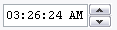

Nastavenie Separátor špecifikuje oddeľovač jednotlivých dátumových polí v predpripravených časových formátoch.
Ako nastavenie hodnôt dátumu a času sa dá použiť konkrétny dátum a čas vybranej položky.
V tomto prípade sa tiež dá použiť formátovanie dátumu a času.
Poznámka: Súborové systémy POSIX (Linux, OS X, BSD, etc) nemajú čas vytvorenia.
Namiesto toho majú čas zmena metadát (ctime), čo je čas poslednej zmeny
(ale nie nutne zmeny obsahu súboru alebo adresára - napríklad zmena prístupových práv
znamená zmenu metadát, ale nie zmenu obsahu)
Použite Kalendár na nastavenie vlastného dátumu (prvotne je nastavený na aktuálny).
Toto sú všetky predpripravené formáty dátumu.
Taktiež je možné zadať vlastné formátovanie do textového poľa.
Nastavenie Separátor špecifikuje oddeľovač jednotlivých dátumových polí
v predpripravených časových formátoch.

Pole Čas prvotne zobrazuje čas, kedy bola aplikácia spustená.
Nastavená hodnota sa dá zmeniť zvýraznením položky a použitím šipiek hore a dolu.
Tlačítko Nastaviť na teraz nastaví čas na aktuálny čas.
Toto sú všetky predpripravené formáty dátumu.
Taktiež je možné zadať vlastné formátovanie do textového poľa.
Nastavenie Seperátor špecifikuje oddeľovač jednotlivých časových polí
v predpripravených časových formátoch.